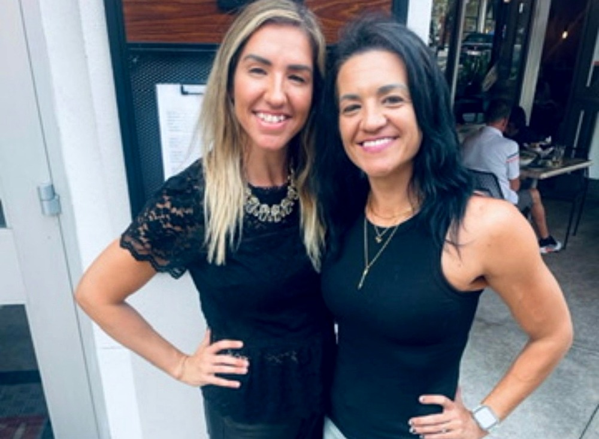
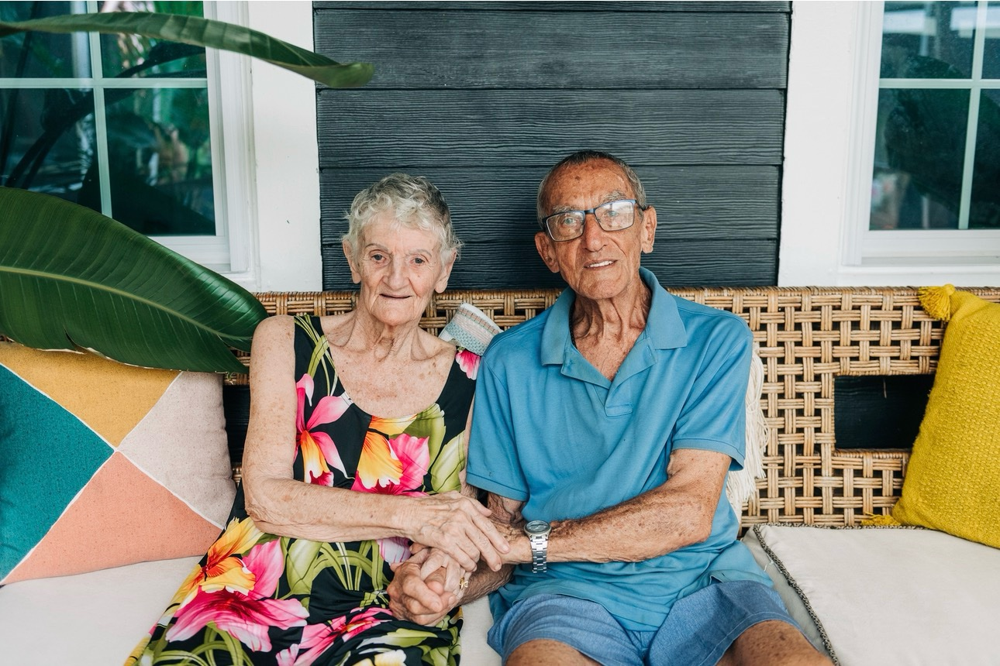

Because life is better with a buddy!
Hi, we are Tamara and Justine — sisters, and the two people behind Blessing Buddy. We would love to be a bright spot in your loved one’s week: someone they know, trust, and genuinely look forward to seeing.
We are a senior companion service that also handles the practical side of life — concierge help with no markup, ever. Changing a light bulb, walking the dog, picking up groceries, running errands — it is all simply part of the visit, at the same flat rate.
We are sisters who believe that a good visit begins with getting to know the person. We listen to their stories, remember what makes them laugh, and find little ways to make an ordinary day feel special.
Blessing Buddy is not an agency. When your family invites us in, you get one of us — or both of us — and the comfort of familiar faces over time. Never a rotating stranger.
We are a registered Florida Homemaker & Companion service (AHCA File #39981334), and we are Level 2 background-screened.
Our Why

Care that remembers the details.
Our grandparents, Nola and Claude, helped shape this calling. Nola spent her later years bringing older women together through faith and friendship. We hope to carry forward her generous spirit.
We want to be a light in someone’s day: a familiar knock at the door, a friend to talk with, and a person they are happy to see. We learn the stories behind a favorite song, remember how someone takes their coffee, and notice when a routine or mood has changed. Families deserve to feel their loved one is known as a whole person.
Because life is better with a buddy.
Where We Are Located
We serve South Tampa, Florida — and we come to wherever your loved one calls home: their own home, a family home, or an independent-living, assisted-living, or memory-care community, when our services are an appropriate fit. Community visits are subject to each facility’s approval and visitation policies.
Write to us at blessingbuddytpa@gmail.com — or begin with a family consultation and we will come to you.